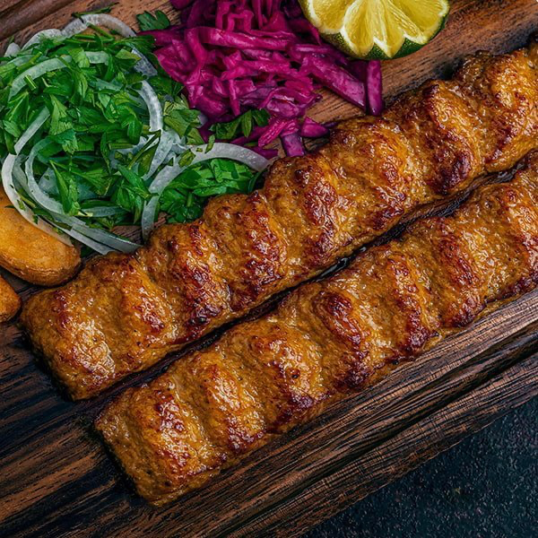

Kabob Khoobideh

The Dish Mediterraneans Have Stolen in America
Kabob Khoobideh [coo-be-deh] is one of Iran's most iconics dishes. There is often confusion in the United States
about the origins of this dish and is ofte confused to be Mediterranean when really it has persian origins. Most commonly
served with rice, grilled onions, and grilled tomatoes, Kabob Khoobideh will always leave you satisfied if prepared correctly.
Ingredients
- Meats: 1.5 lbs ground beef and ground lamb [80-85% lean]
- Vegetables: 3 garlic cloves, 1.5 medium yellow onions, 4 roma tomatoes
- Seasonings: 1 tsp salt, 1 tsp sumac, 0.5 tsp ground black pepper, 0.5 tsp turmeric powder
- 1 egg
- 0.25 cup of melted butter
Preperation
- Finely chop your onions in a food processor. Place a fine metal mesh over a bowl and strain the processed onions, discarding the juice and adding the remaining onion pulp to a bowl.
- Add the ground beef and lamb, minced garlic, salt, spices, and egg to the bowl. Knead all of the ingredients together.
- Fill a small bowl with tap water to wet your fingers when working with the meat.
- Divide the meat into 10 meat balls. For each meatball, place a 1-inch metal scewer over it and squeez the meat around the skewer. Squeez the meat from top to bottom to press the meat evenly around the scewer.
- After every scewer has been prepared with the meat, it is now time to grill them. For grilling you will need to cook the sewers across and open flame using coals. The scewers should not be touching a cooking surface.
- If you are grilling vegetables on scewers, make sure to do those first as they will take longer to cook compared to the kabobs. Cookthe vegetables to the doneness you desire.
- For the kabobs, place as many as you can on your grill and make sure to frequenctly turn the kabobs over to prevent them from falling apart. Continue cooking them and turning them over until they reach the doneness you desire.
- Make sure to not overcook the kabobs because they will dry out. After the kabobs are done, remove them from the grill and place into a container covered in aluminum foil until ready to serve with either bread or rice. If desired, you can brush the emtled butter over the kabobs before serving as well.